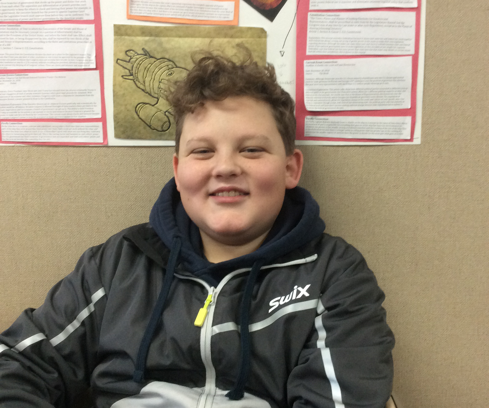

The
opportunity
American's deserve
Team
Jack, Colten, Lilly, Kyle
©WE'RE RIGHT-static github site
Website
20
18
Made In
Designed By
Jack Grodnick
Our Commercial
The “We’re right” party focuses and leans towards conservative values. We will solve many of the nation’s issues while using our conservative morals and beliefs. Some of the many issues we focus on include a maximum minimum wage amount, recreational marijuana, Immigration, and gun laws.
Our Team
Jack
Jack is a team member at We're Right and has dedicated himself to the topic of immigration where he takes a strong stance on protecting our borders.

Colten
Colten is a member of we're right and has looked into several ways of minimizing the damage one can inflict with a gun on others; he has suggested large capacity magazines being banned to complete his goal.The were right party was started back when all four of the founders Colten, Kyle, Lilly, and Jack met in college at Yale in a debate class, they all started to form a bond of friendship. But at the time they thought the government was failing itself in protecting the freedom of the citizens so they took action and formed the were right party. Since they lean more conservative they were on the right side of the spectrum and that’s how they got their name. After their first meeting they figured out there ideologies and from that day on the party grew rapidly.

price: $39.99
Price $39.99
Price $39.99
Price $12.99
About Lilly
Road To Presidency By: Lilly Langhus
My name is Lillian Abigail Langhus. I was born in Golden Valley, Minnesota and grew up in Plymouth. I’m 37 years old and I’m running for President of the United States. Growing up, I took a fair amount of interest in politics. My father was very passionate about politics and often discussed big ideas in the car or at dinner with us. I enjoyed these discussions. In highschool, it was hard to avoid politics. Donald Trump was president and everyone, including me, started to really pay attention to our government and especially our new President. As high school came to a close, it was clear to me I wanted to study politics in college so that I could one day come back and serve my city and state.
I majored in political science at Duke University. Even though I was incredibly interested in politics, I never voiced my opinion. As a kid, I was an introvert and wanted to avoid confrontation at all costs. My political views were private views. This meant it was very unlikely for me to be where I am today. In my sophomore year at Duke, we had a debate in class on weather we thought the minimum wage should be higher, and we had to choose a side. This was the first time I had to speak out on my political views. To my surprise, I liked it. I enjoyed debating and voicing my opinion. I liked getting to argue about issues and saying all the things I’d wanted to say for years. After that, I was much more comfortable speaking out on what I believed.
After I graduated, I took a job at City Hall in Plymouth, Minnesota. I worked in the Parks and Recreation department. My job was to make sure all of the parks were well taken care of and our city had good sports and programs for kids. I loved it! Three years later, I was head of the Parks and Recreation Department and looking to move up. I had that job for about four years when a seat on the city council opened up and I decided to run. This was a close race. A lot of the public thought I was too young and unqualified, but I fought hard, had a great team and I ended up winning. As a councilwoman, I worked to to replace the dying mall with a beautiful shopping center and helped spearhead a program to make our local parks beautiful. I enjoyed this job and I especially enjoyed seeing my city of Plymouth thrive. One night, at a cocktail party for City Hall employees, I was approached by Barbra Molli.She told me that Jake Johnson, the Governor of Minnesota, was retiring. Barbra Molli was part of a group that was looking for potential candidates to replace him and they thought I was a good candidate. I, of course, said I would run. I connected with my old campaign manager and he agreed to help. This election was a very close race. We ran commercials both attacking my opponent and clearly stating my vision for Minnesota. We made merchandise and signs and hosted parties for the volunteers and donors . On election day, I hosted another party for all the people who worked in my campaign. When they announced who won, I almost screamed because I won by 5 votes. My opponent called for a recount, and again, I won by 5 votes. I couldn’t believe it.
I enjoyed being governor. It was definitely what I was meant to do. I had to make a lot of decisions that were not always celebrated. I lowered taxes and initiated school choice. Initially my school choice initiative was very unpopular. However, as a result, private schools became more affordable for all citizens and these new opportunities for students meant test scores went up by ten percent across the state. Overall, I believe I made Minnesota better. I was governor for two years when a woman named Annabel Dwyer visited me in my office. I’ll never forget what she said: “Lilly, presidential elections are coming up and we at WIG (Women in Government), think you should run. I almost fainted. I had so many thoughts in my head. Part of me did not want to do another campaign and be attacked consistently by the media but another part of me definitely wanted the opportunity to run. Finally, when I was able to speak, I said, “I will.”
My name is Lilly Langhus. I’ve been a city councilwoman and a governor. I’ve loved both jobs and I think I’ve been good at them. Now I’m facing a possible new job with new challenges, and a promise that, if elected, I will do whatever I can to help America get back on Its feet.
Kanye West
"I think the We're Right group is dope an I fully support them and I think my audience should too"
Senate Conservatives Fund
"We are currently working with the We're Right group and support them wholeheartedly"
Conservative Fund Of America
"One of the many groups we are supporting is the we're right group and are very supportive of there ideologies"
House Freedom Fund
"We currently are proud to be supporters of the we're right group with and there, candidate"
American's Freedom Fund
"The We're Right group is fully supported by us, and we intend to help them as much as possible to get their candidate elected"